Email Header Analysis
Overview
Analysis of email headers and SMTP logs of emails sent through an open relay mail server.
Lab Environment
- MS1 (SMTP Server)
- PC1 (Recepient Host)
- LAMP (Receiving Mail Server)
- PT1 (Sending Mail Server/Host)
Legitimate Email Analysis
On PT1, a test email was sent on the Thunderbird email client.
On PC1, the received message was then inspected by viewing its email header.
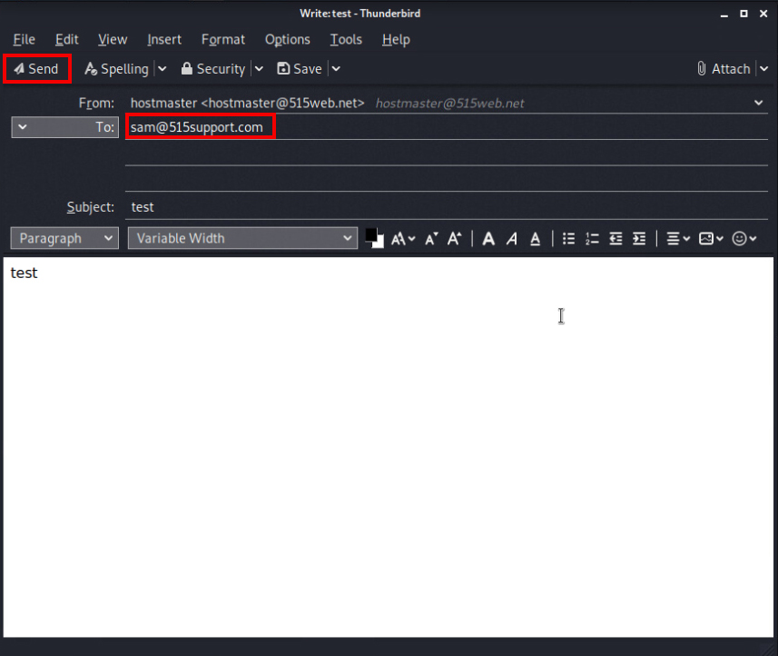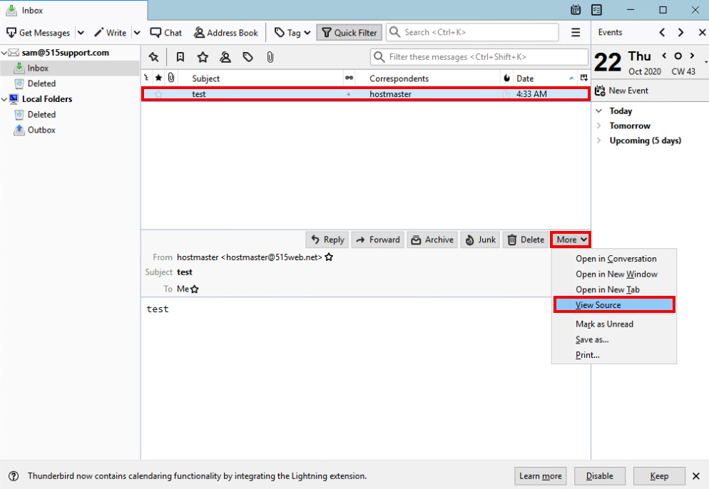
- Return Path: This was the original sender address, as expected. No relaying servers changed the address.
- Received: In this network there were just two servers that processed the emails, mail.515support.com (receiving server) and mail.515web.net (sending server).
- From: This is the original sender's address as expected.
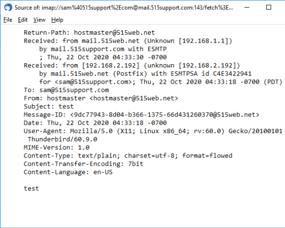
Phishing Email Analysis
PT1 has Postfix installed to allow it to act as an open mail relay SMTP server.
This type of server can be used by spammers to send phishing emails to potential victims.
The server was started with the following code:
service postfix start
In the settings for hostmaster@515web.net, the option to edit the SMTP server (mail.515web.net) can be found.
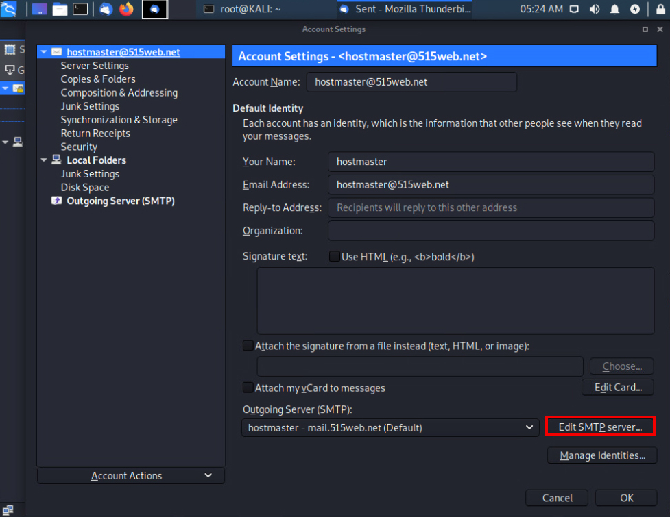
Make sure the default SMTP port is entered and no security and authentication is set.
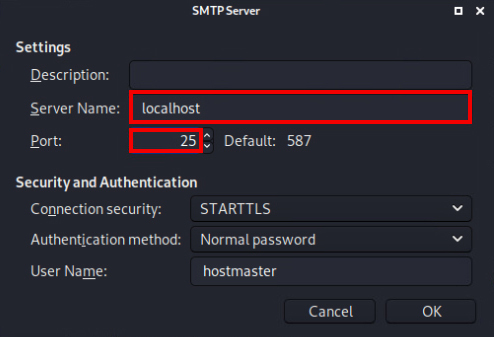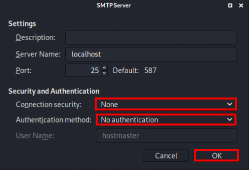
A phishing email was sent to sam@515support.com with malware attached.
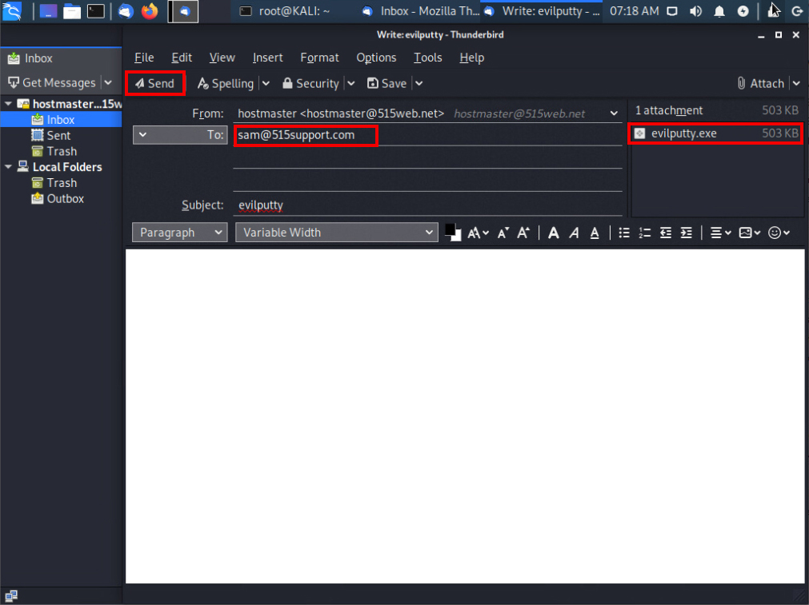
- Return-Path/From: The sender address domain is familiar looking so will likely be be trusted by the potential victim.
- Received: The open relay server can be seen in the list.
Normally authorized relay servers would be managed by Sender Policy Framework (SPF), Domainkey Identified Mail (DKIM),
and Domain-based Message Authentication Reporting and Conformance (DMARC).
If this server domain wasn't whitelisted it should be investigated as a possible threat.
Impersonate an Associate
In the hostmaster account settings on PT1, an associate name familiar to the target victim was used in a email address.
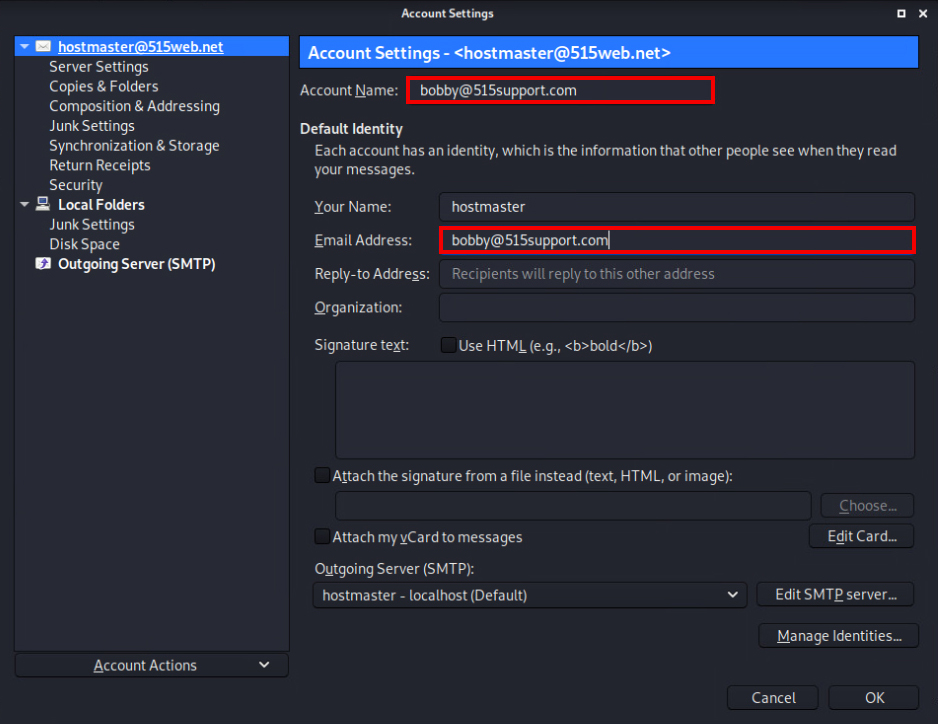
A phishing email with the malware attached was sent to PC1 to impersonate as the proposed associate.
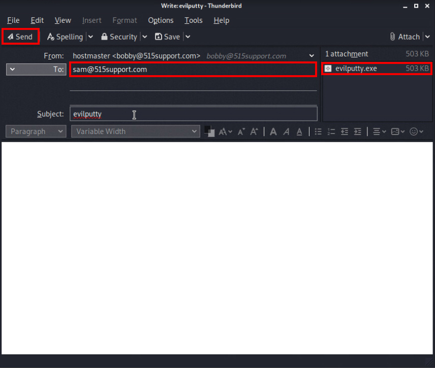
When checking PC1, the email was not received however.
SMTP Log Analysis
On MS1, hMailServer Administrator was used to check the SMTP logs for what happened to the missing email.
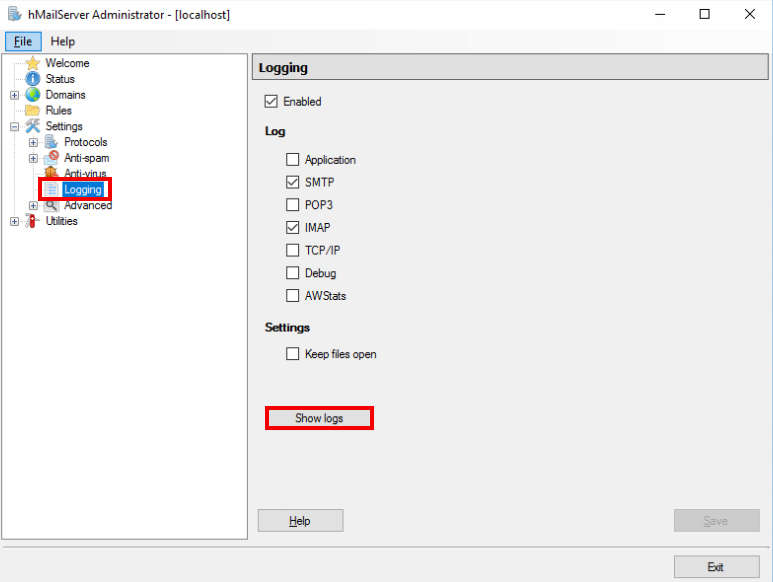
In the SMTP log where the most recent events are held,
there should be a “530 SMTP authentication is required” warning since the local server refused the connection after server reset.
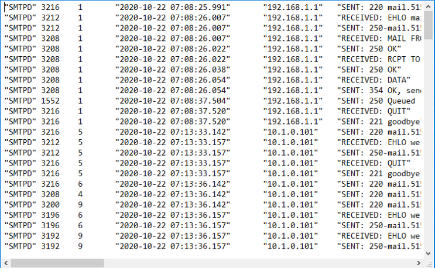
Checking the PC1 email account, there should be a nondelivery report (NDR) reflecting the log found on MS1.
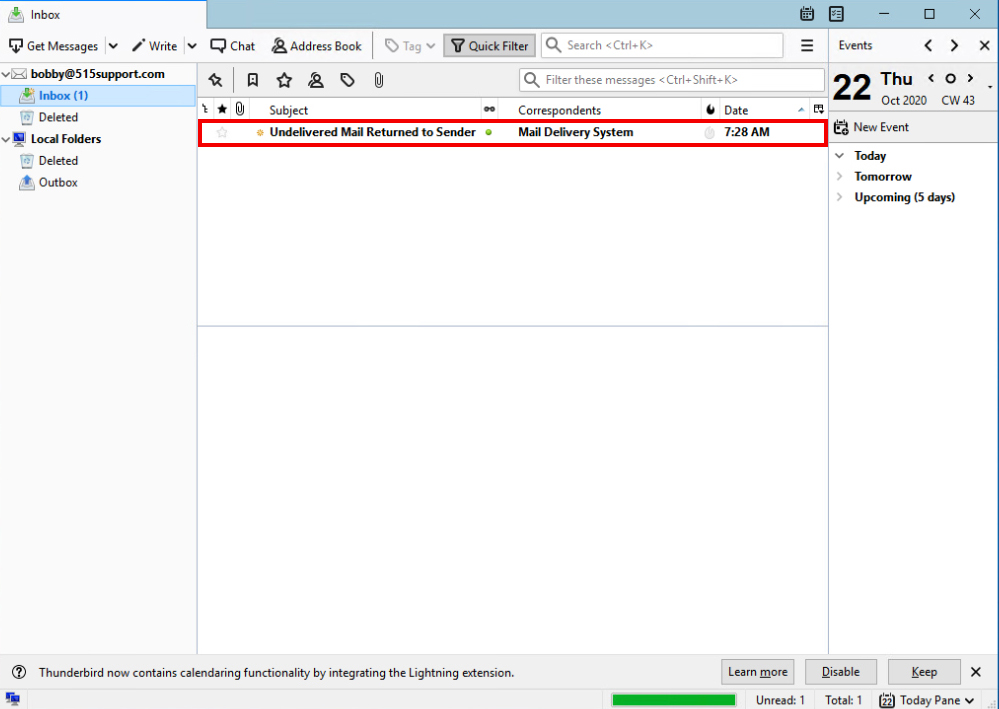
Further action could be taken in a real world scenario, such as contacting the open relay server owner or blacklisting them and their IP addresses.